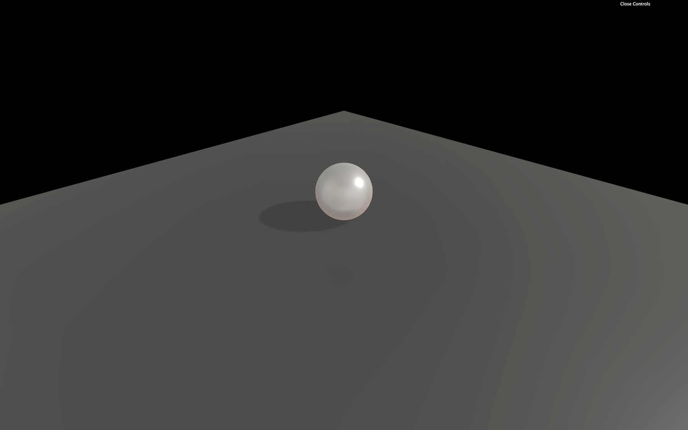

Physics can be one of the coolest features you can add to a WebGL experience. People enjoy playing with objects, see them collide, collapse, fall and bounce like in my portfolio: https://bruno-simon.com/
There are many ways of adding physics to your project, and it depends on what you want to achieve. You can create your own physics with some mathematics and solutions like Raycaster, but if you wish to get realistic physics with tension, friction, bouncing, constraints, pivots, etc. and all that in 3D space, you better use a library.
The idea is simple. We are going to create a physics world. This physics world is purely theoretical, and we cannot see it. But in this world, things fall, collide, rub, slide, etc.
When we create a Three.js mesh, we will also create a version of that mesh inside the physics world. If we make a Box in Three.js, we also create a box in the physics world.
Then, on each frame, before rendering anything, we tell the physics world to update itself; we take the coordinates (position and rotation) of the physics objects and apply them to the corresponding Three.js mesh.
And that's all. What is most difficult is to organize our code in a decent structure. That is a part where paths separate. Each developer will have its habits, and it also depends on what you want to do and how complex the physics can become.
To begin with, we will simply create spheres and boxes.
There are multiple available libraries. First, you must decide if you need a 3D library or a 2D library. While you might think it has to be a 3D library because Three.js is all about 3D, you might be wrong. 2D libraries are usually much more performant, and if you can sum up your experience physics up to 2D collisions, you better use a 2D library.
One example is if you want to create a pool game. The balls can collide and bounce on the walls, but you can project everything on a 2D plane. You can design balls as circles in the physics world, and the walls are simple rectangles. Indeed, you won't be able to do tricks hitting the bottom of the ball so that it can jump over the other balls.
An excellent example of a project done like this is Ouigo Let's play by Merci Michel. They used a 2D physics library because every collision and animation can be represented in a 2D space.
For 3D physics, there are three main libraries:
For 2D physics, there are many libraries, but here's the most popular:
We won't use a 2D library in this lesson, but the 2D library code would be very similar to a 3D library code. The main difference is the axes you have to update.
There are already solutions that try to combine Three.js with libraries like Physijs. Still, we won't use any of those solutions to get a better learning experience and better understand what's going on.
While Ammo.js is the most used library and particularly with Three.js, as you can see in the examples, we will go for Cannon.js. The library is more comfortable to implement in our project and easier to use.
To add Cannon.js to our project, we first need to add the dependency.
In your terminal, on the project folder, run this command npm install --save cannon.
We can now import Cannon.js in our JavaScript with a classic import:
Everything we need is available in the CANNON variable.
Our starter is composed of one sphere on a plane, and shadows are already enabled for aesthetic reasons.

First, we need to create a Cannon.js World:
We could make a WebGL experience in space where there is no gravity, but let's keep our feet on Earth and add gravity. You can change this value with the gravity property, which is a Cannon.js Vec3.
Cannon.js Vec3 is just like Three.js Vector3. It has x, y, and z properties, but also a set(...) method:
We used - 9.82 as the value because it's the gravity constant on earth, but you can use any other value if you want things to fall slower or if your scene happens on Mars.
Because we already have a sphere in our scene, let's create a sphere inside our Cannon.js World.
To do that, we must create a Body. Bodies are simply objects that will fall and collide with other bodies.
Before we can create a Body, we must decide on a shape. There are many available primitive shapes like Box, Cylinder, Plane, etc. We will go for a Sphere with the same radius as our Three.js sphere:
Then we can create our Body and specify a mass and a position:
Finally, we can add the Body to the world with addBody(...):
Nothing is happening because we still need to update our Cannon.js world and update our Three.js sphere accordingly.
To update our World, we must use the step(...). The code behind this method is hard to understand, and we won't explain it in this lesson, but you can find more about it in this article.
For it to work, you must provide a fixed time step, how much time passed since the last step, and how much iterations the world can apply to catch up with a potential delay.
We won't explain what is a time step, but because we want our experience to run at 60fps, we are going to use 1 / 60. Don't worry, the experience will work at the same speed on devices with higher and lower frame rates.
It's up to you for the number of iterations, but it's not that important if the experience is running smoothly. Let's use 3.
For the delta time, it's a little harder. We need to calculate how much time has passed since the last frame. Do not use the getDelta() method from the Clock class. You won't get the intended result, and you'll mess up with the class's internal logic.
To get the right delta time, we need to subtract the elapsedTime from the previous frame to the current elapsedTime:
We can finally update our world:
Still, nothing seems to be moving. But our sphereBody is falling, and you can see that by logging its position after updating the world:
What we need to do now is update our Three.js sphere by using the sphereBody coordinates. There are two ways of doing it. You can either update each position property separately:
Or you can copy all the properties as one with the copy(...) method:
copy(...) is available in many classes such as Vector2, Vector3, Euler, Quaternion, and even classes like Material, Object3D, Geometry, etc.
You should eventually see your sphere falling. The problem is that our sphere seems to fall through the floor. It's because that floor exists in the Three.js scene but not in the Cannon.js world.
We can simply add a new Body using a Plane shape, but we don't want our floor to be affected by gravity and fall. In other words, we want our floor to be static. To make a Body static, set its mass to 0:
As you can see, we did things quite differently this time. We created a Body with no parameter, and we set those parameters after. The result is the same, and the only reason we did this is for the lesson's sake. One interesting thing is that you can create a Body composed of multiple Shapes. It can be useful for complex but solid objects.
You should see the sphere jumping in a direction (probably toward the camera). Not the intended result. The reason is that our plane is facing the camera by default. We need to rotate it just like we rotated the floor in Three.js.
Rotation with Cannon.js is a little harder than with Three.js because you have to use Quaternion. There are multiple ways of rotating the Body, but it has to be with its quaternion property. We are going to use the setFromAxisAngle(...).
The first parameter is an axis. You can imagine it like a spike going through the Body. The second parameter is the angle. It's how much you are rotating the Body around that spike.
We set the axis like if it was a spike going through the Body on the negative x axis (to the left relatively to the camera) and we set the Angle to Math.PI * 0.5 (a quarter of a circle).
You should now see the sphere falling and then stopping on the floor.
We don't need to update the Three.js floor with the Cannon.js floor because this object is not moving.
As you can see, the ball doesn't bounce much. That is the default behavior, and we can change that with Material (Not the Material from Three.js) and ContactMaterial.
A Material is just a reference. You can give it a name and associate it with a Body. The idea is to create a Material for each type of material you have in your scene.
Suppose everything in your world is made out of plastic. In that case, you only have to create one material and name it 'default' or 'plastic'. If you have multiple types of materials in your scene, let's say one material for the floor and one for the ball. Then, you should create various Material and give them names like 'concrete' and 'plastic'.
You could have called them 'ground' and 'ball'. Still, if you want to use the same materials for walls and other objects like cubes, it could be inconvenient to use a material named 'ground'.
Before you create the sphere and the floor, create these two Material:
Now that we have our Material, we must create a ContactMaterial. It is the combination of the two Materials and contains properties for when objects collide.
The first two parameters are the Materials. The third parameter is an object {} that contains two important properties: the friction coefficient (how much does it rub) and the restitution coefficient (how much does it bounce)—both have default values of 0.3.
Once created, add the ContactMaterial to the world with the addContactMaterial(...) method:
There isn't much friction between concrete and plastic, but if you let a plastic ball fall on a concrete floor, you'll see it bounce quite a lot.
We can now use our Material on the Body. You can pass the Material directly when instancing the Body or after with the material property. Let's do both for the sake of learning:
You should see the ball bounce many times before stopping. We cannot see the friction in action because our ball falls perfectly straight on our floor and spend most of its time in the air.
Having different Materials and creating a ContactMaterial for each combination can prove to be puzzling. To simplify everything, let's replace our two Materials by a default one and use it on every Bodies:
We get the same result.
We can go even further by setting our material as the default one of our World. To do that, simply assign the defaultContactMaterial to the world's defaultContactMaterial property:
We can now remove or comment the material assignation of the sphereBody and floorBody.
There are many ways to apply forces to a Body:
0, 0, 0 would be the center of the Body).Because using "force" methods will result in velocity changes, let's not use "impulse" methods
Let's use applyLocalForce(...) to apply a small impulse on our sphereBody at the start:
You can see the ball bounce to the right and roll.
Now let's use the applyForce(...) to apply some wind. Because the wind is permanent, we should apply this force to each frame before updating the World. To correctly apply this force, the point should be the sphereBody.position:
Handling one or two objects is easy, but managing dozens of objects can be a mess. We need to automate things a little.
First, remove or comment the sphere, the sphereShape and the sphereBody.
To start with, let's improve how we create spheres with a function that will add both the Three.js and the Cannon.js versions.
As parameters of this function, we will only pass the radius and the position, but feel free to add other parameters such as mass, material, subdivisions, etc.
Now we can create the Three.js Mesh:
And the Cannon.js Body:
We can remove the previously created sphere and call the createSphere(...) (after creating the Cannon.js world and the Three.js scene). Don't forget to remove the sphere update in the tick() function:
As you can see, the position doesn't have to be a Three.js Vector3 or a Cannon.js Vec3 and we can simply use an object with x, y and z properties (luckily for us).
You should see the sphere floating above the floor, but unfortunately, it's not moving anymore. And this is perfectly normal because we removed the code that was taking the Cannon.js Body position to apply it to the Three.js Mesh position.
To handle this part, we will create an array of all objects that need to be updated. Then we'll add the newly created Mesh and Body inside an object to that array:
You can write this last part like this (no need to specify the property when the variable name is the same in JavaScript):
We can now loop on that array inside the tick() function (right after updating the world) and copy each body.position to the mesh.position:
The sphere should start falling again.
Let's have fun and add a createSphere button to our Dat.GUI. The problem is that the first parameter when using the gui.add(...) method, should be an object, and the second parameter should be a property name. Unfortunately, our createSphere method is not in an object, and also need to passe parameters to it. This kind of situation can happen regularly. A not so bad solution would be to create an object which only purpose would be to have those lost functions as properties:
And then add functions to it when needed (after creating the createSphere function):
Finally, we can add this new createSphere property to Dat.GUI:
If you click on the newly created createSphere button, you should see spheres staking one on each other. That is due to the sphere popping on the exact same position. Let's add some randomness:
It's raining spheres!
Try not to burn your computer; this code needs optimization.
Because the geometry and the material of the Three.js Mesh are the same, we should get them out of the createSphere function. The problem is that we are using the radius to create our geometry. An easy solution would be to fix the radius of the SphereGeometry to 1 and then scale the Mesh:
You should get the same result.
Now that our spheres are working well, let's do the same process but for the boxes.
To create a box, we must use a BoxGeometry and a Box shape. Be careful; the parameters aren't the same. A BoxGeometry needs a width, a height, and a depth. In the meantime, a Box shape needs a halfExtents. It is represented by a Vec3 corresponding to a segment that starts at the center of the box and joining one of that box corners:
Don't forget to remove the first createSphere(...) call, or you'll have both the sphere and the box created in the same position simultaneously, which might get messy.
You should see a box falling and suddenly going through the floor. If you click on the createBox button of Dat.GUI, it should get even more acute.
We forgot one significant thing: our meshes are not rotating. What's happening here is that the box bounce on the floor and fall on its side. But all we can see is the box standing straight and going through the floor because the Three.js Mesh isn't rotating like the Cannon.js Body is.
We didn't see the problem before because we were using spheres and they looked the same wether we rotate them or not.
We can fix this by copying the Body quaternion to the Mesh quaternion just like we did with the position:
The boxes should fall adequately now. You can create spheres and boxes as you want. As always, try not to burn your computer.
When testing the collisions between objects, a naive approach is testing every Body against every other Body. While this is easy to do, it's costly in terms of performance.
That is where broadphase comes up. The broadphase is doing a rough sorting of the Bodies before testing them. Imagine having two piles of boxes far from each other. Why would you test the boxes from one pile against the boxes in the other pile? They are too far to be colliding.
There are 3 broadphase algorithms available in Cannon.js:
The default broadphase is NaiveBroadphase, and I recommend you to switch to SAPBroadphase. Using this broadphase can eventually generate bugs where a collision doesn't occur, but it's rare, and it involves doing things like moving Bodies very fast.
To switch to SAPBroadphase, simply instantiate it in the world.broadphase property and also use this same world as parameter:
Even if we use an improved broadphase algorithm, all the Body are tested, even those not moving anymore. We can use a feature called sleep.
When the Body speed gets incredibly slow (at a point where you can't see it moving), the Body can fall asleep and won't be tested unless a sufficient force is applied to it by code or if another Body hits it.
To activate this feature, simply set the allowSleep property to true on the World:
You can also control how likely it is for the Body to fall asleep with the sleepSpeedLimit and sleepTimeLimit properties but we won't change those.
You can listen to events on the Body. That can be useful if you want to do things like play a sound when objects collide or if you want to know if a projectile has touched an enemy.
You can listen to events on Body such as 'colide', 'sleep' or 'wakeup'.
Let's play a hit sound when our spheres and boxes collide with anything. First, create that sound in native JavaScript and create a function that should play the sound.
Some browsers like Chrome prevent sounds from playing unless the user has interacted with the page like clicking anywhere, so don't worry if you don't hear the first sounds.
A little far-fetched to just play a sound, but we will add more to that function later.
Now, let's listen to the 'collide' event on our Bodies. We will only focus on the createBox function and add it to the createSphere function once we are done.
Now, listen to the collide event and use the playHitSound function as the callback:
You should hear the hit sound when the cube touches the ground or when cubes collide. Don't forget to click on the page before the box hits the floor if you are using Chrome because Chrome refuse to play sounds if no user interaction occurred yet.
The sound seems pretty good. Unluckily, things get truly odd when we add multiples boxes.
The first problem is that when we call hitSound.play() while the sound is playing, nothing happens because it is already playing. We can fix that by resetting the sound to 0 with the currentTime property:
While this is better at the start, we hear too many hit sounds even when a cube slightly touches another. We need to know how strong the impact was and not play anything if it wasn't strong enough.
To get the impact strength, we first need to get information about the collision. We can do that by adding a parameter to the 'collide' callback (which is our playHitSound function):
The collision variable now contains a lot of information. The impact strength can be found by calling the getImpactVelocityAlongNormal() method on the contact property:
If you look at the logs, you should see a number. The stronger the impact, the higher the number.
We test that value and only play the sound if the impactStrength is strong enough:
For even more realism, we can add some randomness to the sound volume:
If we wanted to go even further, we could have multiple slightly different hit sounds. And to prevent having too many sounds playing simultaneously, we could add a very short delay where the sound cannot play again after being played once.
We won't do those in this lesson, but feel free to try stuff.
Let's copy the code we used in the createBox function to the createSphere function:
The sounds should be working for the spheres too.
Let's add a reset button.
Create a reset function and add it to your Dat.GUI as we did for createBox and createSphere:
Now, let's loop on every object inside our objectsToUpdate array. Then remove both the object.body from the world and the object.mesh from the scene. Also, don't forget to remove the eventListener like you would have done in native JavaScript:
And that's it. You can click on the reset button to remove everything.
While we covered the basics and you can already do a lot of things, here are some areas of improvement.
Constraints, as the name suggests, enable constraints between two bodies. We won't cover those in this lesson, but here's the list of constraints:
There are many classes, and each one with different methods, properties, and events. Try to browse through all of them at least once just to know that they exist. It might save you some time in your future projects.
The documentation isn't perfect. It would help if you spent some time in the demos and research to find out how to do things. Many people probably had the issues you might encounter. Don't hesitate to rely on the community.
Running the physics simulation takes time. The component of your computer doing the work is the CPU. When you run Three.js, Cannon.js, your code logic, etc. everything is done by the same thread in your CPU. That thread can quickly overload if there is too much to do (like too many objects in the physics simulation), resulting in a frame rate drop.
The right solution is to use workers. Workers let you put a part of your code in a different thread to spread the load. You can then send and receive data from that code. It can result in a considerable performance improvement.
The problem is that the code has to be distinctly separated. You can find a good and simple example here in the page source code.
As we said earlier, Cannon.js hasn't been updated for years. Fortunately, some guys forked the repository and started working on updates. Thanks to them, we have access to a better and maintained version of Cannon.js:
To use this version instead of the original, open the terminal in the project folder (or shut down the server), remove the previous cannon.js dependency with npm uninstall --save cannon, install the new version with npm install --save cannon-es@0.15.1, and change the way you import Cannon.js in the code:
Everything should be working just like before. You can check out the changes on the Git repository page.
We used Cannon.js because the library is easy to implement and understand. One of its biggest competitors is Ammo.js. While it's harder to use and to implement in your project, here are some features that might be of interest to you:
If you need the best performance or have particular features in your project, you probably should go for Ammo.js instead of Cannon.js.
Physijs ease the implementation of physics in a Three.js project. It uses Ammo.js and supports workers natively.
Instead of creating the Three.js object and the physics object, you create both simultaneously:
Physijs will take care of the rest.
While it's fascinating, especially for beginners, things get complicated when you try to do something not supported by the library. Finding where a bug comes from can also be a hassle.
Like for Ammo.js, take your time and think about what is the best solution for your project.